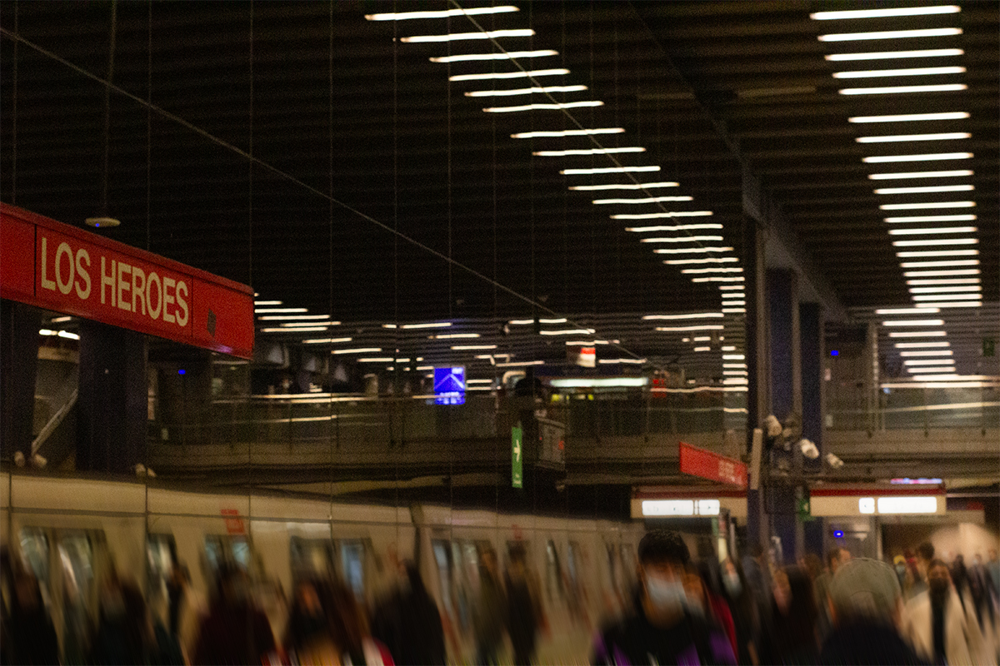
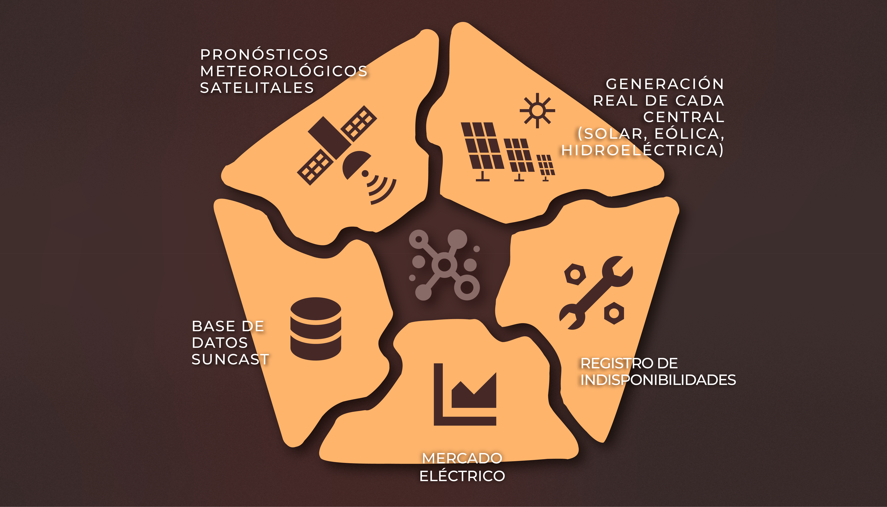
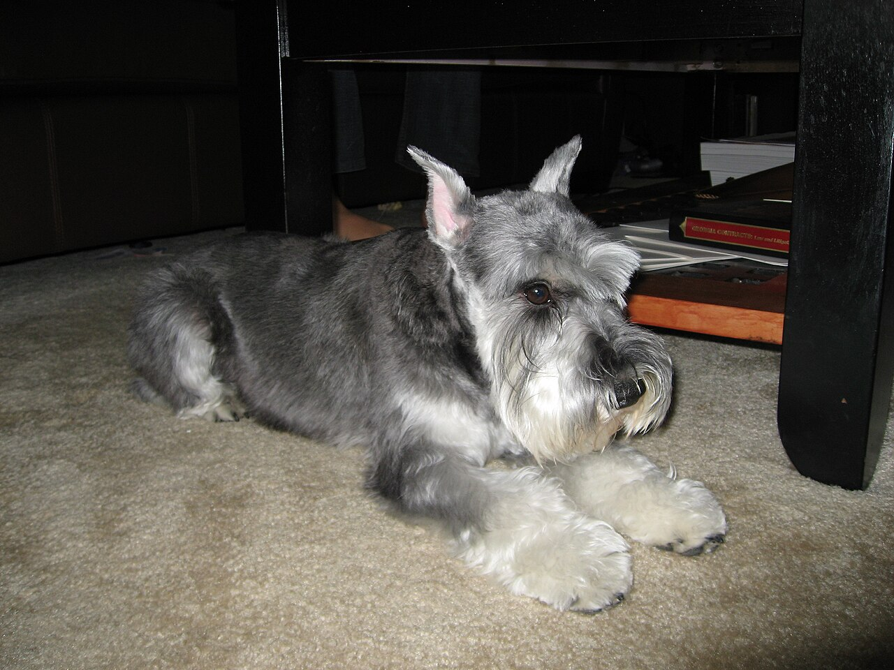

Creo contenido de valor para empresas B2B que buscan posicionarse como referentes en su industria. A través de una estrategia de marketing y comunicaciones, desarrollo contenidos que fortalecen la autoridad de marca, generan confianza y conectan con audiencias clave. Mis servicios incluyen gestión de prensa, administración de redes sociales, redacción de artículos para blogs y creación de newsletters.
🧠 💭 ➡ 📝 ➡ 📣 ✨
Convierto tu conocimiento complejo en comunicación con impacto.
Me especializo en traducir temas complejos —técnicos, operacionales o industriales— en relatos claros, precisos y bien estructurados, alineados con objetivos comerciales concretos. Tengo experiencia en desarrollo de contenidos, arquitectura de la información y narrativa digital, combinando criterio editorial con ejecución práctica.
Santiago de Chile, 2026.
Textos Web Audiovisual Editorial

© José Miguel Leiva, 2025CLIENTES
.avif)


TEXTOS
Los desafíos que plantea el Informe de Cumplimiento 2025 del CENSuncast Chile
Redacto contenidos con valor analítico e informativo para clientes B2B que permiten posicionar una marca como referente experto en el mercado. Podemos publicar a en plataformas propias, como Redes Sociales, blogs y newsletters; o a través de la prensa mediante la circulación de notas de interés público.
Leer texto completo en Suncast.cl
Fundamentos técnicos del pronóstico de generación renovableSuncast Chile
Adapto el conocimiento de tu empresa a formatos ágiles y atractivos para redes sociales, preservando el rigor, la claridad y el valor que diferencian a tu marca y generan confianza en tus potenciales clientes.
Ver la publicación completa en LinkedIn
Mirada animal (Revista Odradek)
Una creencia campestre o ficción inocente que creí de niño es que los caballos duermen de pie. Este cuento no es del todo falso, claro, pero sí las explicaciones que me fueron dadas entonces. Decían que esta costumbre estoica e inconcebible, que ahora me recuerda la impresión que Bolaño definió como la “incomodidad legendaria” al ver a los oficinistas tomar café de pie en el Haití, tenía su causa en una limitación anatómica. Sin embargo, tiene que ver con una inconexión y una comprensión casi imposible, salvo para la etología, del instinto de un mamífero herbívoro. Los caballos no duermen siempre de la misma manera. En general, lo hacen cabeceando, luchan por mantener la conciencia ante el peligro de los depredadores oportunistas, del mismo modo en que lucha por mantenerse en pie un estudiante sonámbulo durante un viaje en bus a las cinco y media de la mañana, con las piernas siempre a punto de ceder. La mayoría de las veces, los caballos solo dormitan, pero cuando sueñan, lo hacen recostados e incluso acurrucados como un cachorrito cualquiera.
Leer texto completo en Odradek.cl
Suite presidencial
Crónica periodística narrativa que se adjudicó una Mención Honrosa en la primera edición chilena del premio Nuevas Plumas, en 2024.
Leer texto completo en Medium
Texto de sala (Chile de general Historia, Felipe Ulloa. Galería Departamento Jota, 2023.)
Titulado Encuentre las seis diferencias, este texto acompañó la exposición del escultor Felipe Ulloa en la galería de Arte Contemporáneo santiaguina Departamento Jota, en noviembre de 2023.
Texto completo en Medium
Reseña 1891, Año de sangre (CULTO La Tercera, gestión de medios para Editorial Universitaria)
Texto redactado como parte de la estrategia de gestión y difusión de prensa desarrollada para Editorial Universitaria.
Leer en latercera.com
Por la ruta de Monckeberg (Revista Doble Espacio, Facultad Comunicación e Imagen UChile)
Crónica periodística narrativa, encargada por el medio de la Facultad de Comunicación e Imagen de la Universidad de Chile, Doble Espacio, en 2019.
Leer texto completo en Doble Espacio
WEB
Gazaue Pérez-Barros
(Sitio web)
Diseño y desarrollo de sitio web corporativo para oficina de arquitectura, abordando UX/UI, arquitectura de la información, contenidos y front-end. El proyecto traduce la propuesta de valor del estudio —centrada en bienestar, productividad y diseño de espacios de trabajo— en una experiencia digital clara y estructurada.
Se definió una arquitectura de contenidos orientada a facilitar la comprensión de servicios, procesos y casos, junto con una interfaz visual limpia y contemporánea, alineada con el sector. Los contenidos fueron desarrollados para posicionar a la oficina como un socio estratégico, equilibrando claridad comunicacional y precisión técnica.
El desarrollo prioriza rendimiento, responsividad y buenas prácticas de SEO, dando como resultado una plataforma coherente que articula branding, contenido y funcionalidad.

AUDIOVISUAL
Pégale a tu papá
Microdocumental realizado como parte de memoria de título Pizarra de canallas.
Visitar Pizarradecanallas.clEditorial

Revista Cacería
Proyecto de revista literaria independiente. Su número 0 fue construido por obras de diversos escritores inéditos y publicados, artistas visuales y periodistas, así como una entrevista al teórico Federico Galende.


Chile de general Historia, registro fotográfico.
Registro fotográfico de Chile de general Historia, escultura del artista chileno Felipe Ulloa Aranda.